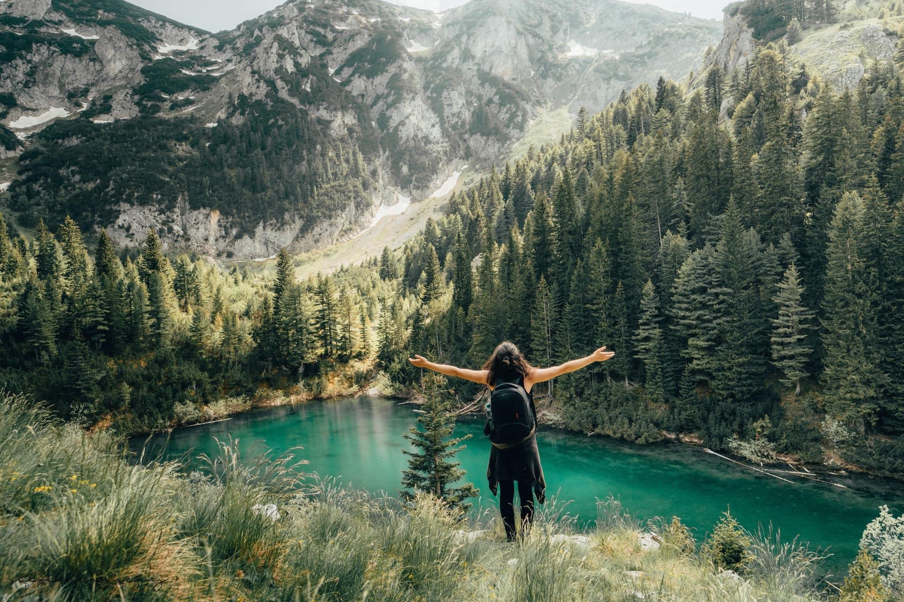
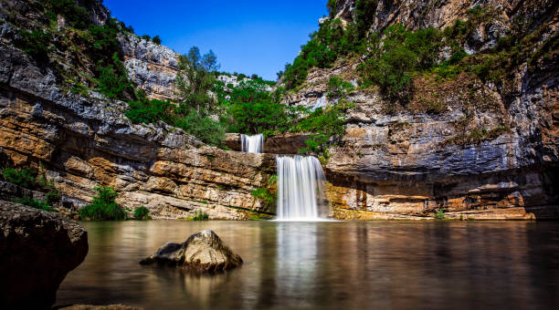
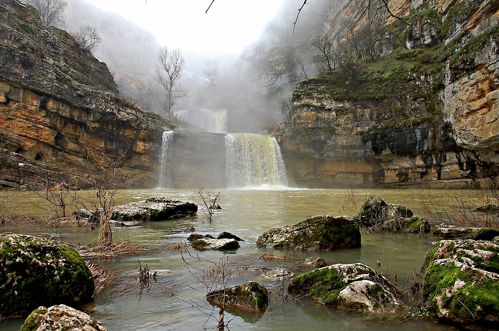

Lake Leqinat or Lake Lićenat (Albanian: Liqeni i Leqinatit or Leqinati, or Liqeni i Kuqishtës; ) is a mountain lake found on the Mount Leqinat in the Prokletije range in western Kosovo. This lake is well known throughout Kosovo and is visited by people going to the Rugova Canyon or by people climbing nearby peaks such as Leqinat 2,341 m (7,680 ft) and Guri i Kuq at 2,522 m (8,274 ft). Lake Leqinat is at an elevation of 1,970 m (6,463 ft). Lake Leqinat is just above the village of Kuqishtë.
To get to the Lake, you have to drive to the restaurant "Guri i Kuq" and then continue on foot following the path to the Lake. Follow the signs through the trees as they indicate the direction you should follow to the Lake.
Kusar Cave is one of the most special destinations in Kosovo. According to archaeological finds, this cave was inhabited in Eneolithic times. This cave is located 1km away from the village of Kusar in Gjakova and is located in a mountainous terrain of the Pashtrik Mountains.
Kusar Cave is characterized by a rocky and green terrain, where visitors can walk to its interior and enjoy the breathtaking green views that this cave offers to many visitors.
Although in a mountainous country, it is worth mentioning that you can travel by car to the destination and then walk 10 min to the cave as the road there is paved and in good condition.
The cave is one of the unique attractions of Gjakova, so it is intended to be used
also as an environment of visits organized by schools..


Located in the village of Rudë in the municipality of Malisheva, Mirusha Waterfalls, otherwise known as the Regional Nature Park, are one of the most beautiful destinations in Kosovo. This area is characterized by a large number of lakes of various shapes and sizes including 16 lakes and 12 waterfalls.
In addition to experiencing the breathtaking view of the great lake, we recommend that you climb higher and see all the lakes located in the area and complete the scenic views that Mirusha Waterfalls offer to visitors.
To get the base of the waterfalls you can have a walk through a nice wood, coasting the mirusha river.